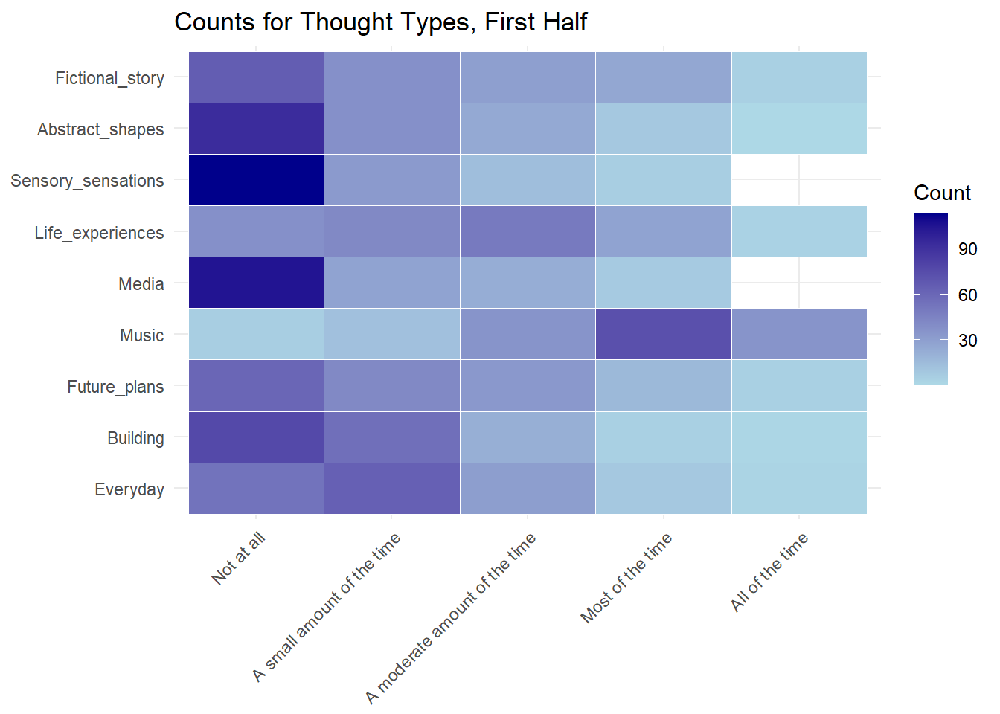
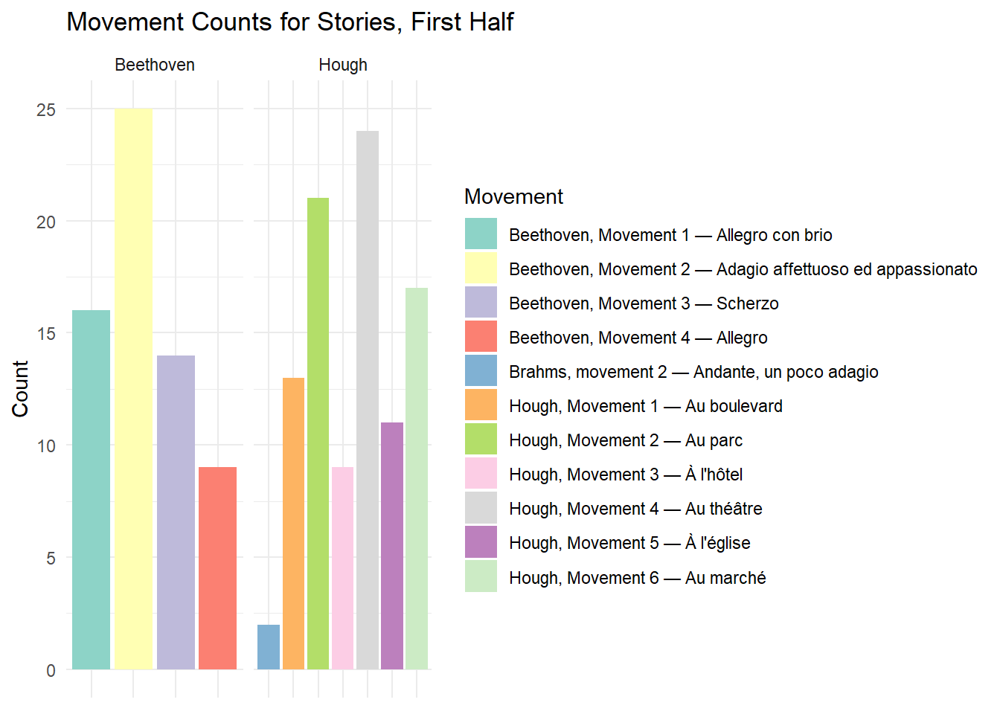

library(tidyverse)
library(broom)
library(dplyr)
library(ggplot2)
library(tidyr)
library(knitr)
library(skimr)In this section we’ll look at the overall distribution of different thought types and movements in the datasets.
Here are the dataframes that we tidied up in the dataset overview page.
data <- read_csv("https://raw.githubusercontent.com/hw3446/Final_Project_PUC/main/posts/Dataset_overview/working_data/data.csv")
data2 <- read_csv("https://raw.githubusercontent.com/hw3446/Final_Project_PUC/main/posts/Dataset_overview/working_data/data2.csv")We’ll start by visualising the counts for each type of thought in each half of the concert. Here we’re creating a dataframe showing thought types in a long format with counts for each.
thought_types <- c("Fictional_story", "Abstract_shapes", "Sensory_sensations", "Life_experiences", "Media", "Music", "Future_plans", "Building", "Everyday")
#First half of concert
thoughts_long1 <- data %>%
pivot_longer(cols = thought_types,
names_to = "Category",
values_to = "Response") %>%
count(Category, Response) %>%
mutate(Response = factor(Response,
levels = c("Not at all",
"A small amount of the time",
"A moderate amount of the time",
"Most of the time",
"All of the time"))) %>%
mutate(Category = factor(Category, levels = rev(c("Fictional_story",
"Abstract_shapes",
"Sensory_sensations",
"Life_experiences",
"Media",
"Music",
"Future_plans",
"Building",
"Everyday")))) %>% filter(!is.na(Response))
#Second half of concert
thoughts_long2 <- data2 %>%
pivot_longer(cols = thought_types,
names_to = "Category",
values_to = "Response") %>%
count(Category, Response) %>%
mutate(Response = factor(Response,
levels = c("Not at all",
"A small amount of the time",
"A moderate amount of the time",
"Most of the time",
"All of the time"))) %>%
mutate(Category = factor(Category,
levels = rev(c("Fictional_story",
"Abstract_shapes",
"Sensory_sensations",
"Life_experiences",
"Media",
"Music",
"Future_plans",
"Building",
"Everyday")))) %>%
filter(!is.na(Response))These dataframes are used for the first plots, which show the counts for each type of thought during each half.
#First half
ggplot(thoughts_long1, aes(x = Response, y = Category, fill = n)) +
geom_tile(color = "white") + # Add white borders to tiles
scale_fill_gradient(low = "lightblue", high = "darkblue") +
labs(title = "Counts for Thought Types, First Half", x = NULL, y = NULL, fill = "Count") +
theme_minimal() +
theme(axis.text.x = element_text(angle = 45, hjust = 1))
#Second half
ggplot(thoughts_long2, aes(x = Response, y = Category, fill = n)) +
geom_tile(color = "white") +
scale_fill_gradient(low = "lightblue", high = "darkblue") +
labs(title = "Counts for Thought Types, Second Half", x = NULL, y = NULL, fill = "Count") +
theme_minimal() +
theme(axis.text.x = element_text(angle = 45, hjust = 1))Then we examine the counts for the movements people select as invoking the most vivid memory or story.
# First half of concert, collecting movement names in usable format:
mems <- data$Movement_mem %>% na.omit() %>% toupper()
stories <- data$Movement_story %>% na.omit() %>% toupper()
movements_mem <- unlist(strsplit(mems, "[; ,]+")) %>% trimws()
movements_story <- unlist(strsplit(stories, "[; ,]+")) %>% trimws()
movements_mem <- table(movements_mem)
movements_story <- table(movements_story)
# Second half of concert, collecting movement names in usable format:
mems2 <- data2$Movement_mem %>% na.omit() %>% toupper()
stories2 <- data2$Movement_story %>% na.omit() %>% toupper()
movements_mem2 <- unlist(strsplit(mems2, "[; ,]+")) %>% trimws()
movements_story2 <- unlist(strsplit(stories2, "[; ,]+")) %>% trimws()
movements_mem2 <- table(movements_mem2)
movements_story2 <- table(movements_story2)
#Map for recoding movements using full names
recode_map <- c(
"B1" = "Beethoven, Movement 1 — Allegro con brio",
"B2" = "Beethoven, Movement 2 — Adagio affettuoso ed appassionato",
"B3" = "Beethoven, Movement 3 — Scherzo",
"B4" = "Beethoven, Movement 4 — Allegro",
"H1" = "Hough, Movement 1 — Au boulevard",
"H2" = "Hough, Movement 2 — Au parc",
"H3" = "Hough, Movement 3 — À l'hôtel",
"H4" = "Hough, Movement 4 — Au théâtre",
"H5" = "Hough, Movement 5 — À l'église",
"H6" = "Hough, Movement 6 — Au marché",
"BR1" = "Brahms, movement 1 — Allegro non troppo",
"BR2" = "Brahms, movement 2 — Andante, un poco adagio",
"BR3" = "Brahms, movement 3 — Scherzo: Allegro",
"BR4" = "Brahms, movement 4 — Finale"
)
# Recode names in the frequency tables
names(movements_mem) <- recode(names(movements_mem), !!!recode_map)
names(movements_story) <- recode(names(movements_story), !!!recode_map)
names(movements_mem2) <- recode(names(movements_mem2), !!!recode_map)
names(movements_story2) <- recode(names(movements_story2), !!!recode_map)
# Convert tables to data frames and rename columns
df_mem1 <- as.data.frame(movements_mem)
colnames(df_mem1) <- c("Movement_eliciting_memory", "Count")
df_story1 <- as.data.frame(movements_story)
colnames(df_story1) <- c("Movement_eliciting_story", "Count")
df_mem2 <- as.data.frame(movements_mem2)
colnames(df_mem2) <- c("Movement_eliciting_memory", "Count")
df_story2 <- as.data.frame(movements_story2)
colnames(df_story2) <- c("Movement_eliciting_story", "Count")
# Display frequency tables with full movement names
kable(df_mem1)| Movement_eliciting_memory | Count |
|---|---|
| Beethoven, Movement 1 — Allegro con brio | 34 |
| Beethoven, Movement 2 — Adagio affettuoso ed appassionato | 46 |
| Beethoven, Movement 3 — Scherzo | 15 |
| Beethoven, Movement 4 — Allegro | 10 |
| Hough, Movement 1 — Au boulevard | 13 |
| Hough, Movement 2 — Au parc | 17 |
| Hough, Movement 3 — À l’hôtel | 12 |
| Hough, Movement 4 — Au théâtre | 16 |
| Hough, Movement 5 — À l’église | 17 |
| Hough, Movement 6 — Au marché | 21 |
kable(df_story1)| Movement_eliciting_story | Count |
|---|---|
| Beethoven, Movement 1 — Allegro con brio | 16 |
| Beethoven, Movement 2 — Adagio affettuoso ed appassionato | 25 |
| Beethoven, Movement 3 — Scherzo | 14 |
| Beethoven, Movement 4 — Allegro | 9 |
| Brahms, movement 2 — Andante, un poco adagio | 2 |
| Hough, Movement 1 — Au boulevard | 13 |
| Hough, Movement 2 — Au parc | 21 |
| Hough, Movement 3 — À l’hôtel | 9 |
| Hough, Movement 4 — Au théâtre | 24 |
| Hough, Movement 5 — À l’église | 11 |
| Hough, Movement 6 — Au marché | 17 |
kable(df_mem2)| Movement_eliciting_memory | Count |
|---|---|
| Brahms, movement 1 — Allegro non troppo | 38 |
| Brahms, movement 2 — Andante, un poco adagio | 31 |
| Brahms, movement 3 — Scherzo: Allegro | 50 |
| Brahms, movement 4 — Finale | 26 |
kable(df_story2)| Movement_eliciting_story | Count |
|---|---|
| Brahms, movement 1 — Allegro non troppo | 17 |
| Brahms, movement 2 — Andante, un poco adagio | 27 |
| Brahms, movement 3 — Scherzo: Allegro | 37 |
| Brahms, movement 4 — Finale | 29 |
These can be plotted:
# Add a Composer column (Beethoven for B1-B4, Hough for H1-H6)
df_mem1$Composer <- ifelse(grepl("^Beethoven", df_mem1$Movement_eliciting_memory), "Beethoven", "Hough")
df_story1$Composer <- ifelse(grepl("^Beethoven", df_story1$Movement_eliciting_story), "Beethoven", "Hough")
# Set movement factor levels for proper ordering
df_mem1$Movement <- factor(df_mem1$Movement, levels = recode_map)
df_story1$Movement <- factor(df_story1$Movement, levels = recode_map)
# Plot for memories, first half
mem_plot1 <- ggplot(df_mem1, aes(x = Movement_eliciting_memory, y = Count, fill = Movement_eliciting_memory)) +
geom_bar(stat = "identity", position = "dodge") +
facet_wrap(~ Composer, scales = "free_x") + # Separate Beethoven & Hough
theme_minimal() +
labs(title = "Movement Counts for Memories, First Half", x = "Movement", y = "Count") +
theme(axis.title.x = element_blank(),
axis.text.x = element_blank(),
axis.ticks.x = element_blank()) +
scale_fill_brewer(palette = "Set3") +
guides(fill = guide_legend(title = "Movement")) +
scale_y_continuous(breaks = scales::breaks_pretty(n = 5))
# Plot for stories, first half
story_plot1 <- ggplot(df_story1, aes(x = Movement_eliciting_story, y = Count, fill = Movement_eliciting_story)) +
geom_bar(stat = "identity", position = "dodge") +
facet_wrap(~ Composer, scales = "free_x") +
theme_minimal() +
labs(title = "Movement Counts for Stories, First Half", x = "Movement", y = "Count") +
theme(axis.title.x = element_blank(),
axis.text.x = element_blank(),
axis.ticks.x = element_blank()) +
scale_fill_brewer(palette = "Set3") +
guides(fill = guide_legend(title = "Movement")) +
scale_y_continuous(breaks = scales::breaks_pretty(n = 5))
##Second Half
# Set movement factor levels for proper ordering
df_mem2$Movement_eliciting_memory <- factor(df_mem2$Movement_eliciting_memory, levels = recode_map)
df_story2$Movement_eliciting_story <- factor(df_story2$Movement_eliciting_story, levels = recode_map)
# Plot for memories, second half
mem_plot2 <- ggplot(df_mem2, aes(x = Movement_eliciting_memory, y = Count, fill = Movement_eliciting_memory)) +
geom_bar(stat = "identity", position = "dodge") +
theme_minimal() +
labs(title = "Movement Counts for Memories, Second Half", x = "Movement", y = "Count") +
theme(axis.title.x = element_blank(),
axis.text.x = element_blank(),
axis.ticks.x = element_blank()) +
scale_fill_brewer(palette = "Set3") +
guides(fill = guide_legend(title = "Movement")) +
scale_y_continuous(breaks = scales::breaks_pretty(n = 5))
# Plot for stories, second half
story_plot2 <- ggplot(df_story2, aes(x = Movement_eliciting_story, y = Count, fill = Movement_eliciting_story)) +
geom_bar(stat = "identity", position = "dodge") +
theme_minimal() +
labs(title = "Movement Counts for Stories, Second Half", x = "Movement", y = "Count") +
theme(axis.title.x = element_blank(),
axis.text.x = element_blank(),
axis.ticks.x = element_blank()) +
scale_fill_brewer(palette = "Set3") +
guides(fill = guide_legend(title = "Movement")) +
scale_y_continuous(breaks = scales::breaks_pretty(n = 5))
mem_plot1story_plot1
mem_plot2story_plot2DEMOGRAPHIC INFO
We’ll get a quick overview of our demographic data. Note, first we’re going to add a ‘Floor’ column based on participants’ location in the hall. Having this info is useful, as concert subscribers and many older patrons sit downstairs in the auditorium.
Here’s a map of each location in the hall for reference:
Creating the floor variable:
data <- data %>%
mutate(Floor = ifelse(Location %in% c("A", "B", "C", "D", "E", "F"), "Downstairs", "Upstairs")) %>% relocate(Floor, .after = Location)And an overview of our demographics variables:
demographics <- c('Age', 'Gender', 'Music_listening', 'Practice', 'Floor')
demographics_data <- dplyr::select(data, all_of(demographics))
skim(demographics_data)| Name | demographics_data |
| Number of rows | 169 |
| Number of columns | 5 |
| _______________________ | |
| Column type frequency: | |
| character | 4 |
| numeric | 1 |
| ________________________ | |
| Group variables | None |
Variable type: character
| skim_variable | n_missing | complete_rate | min | max | empty | n_unique | whitespace |
|---|---|---|---|---|---|---|---|
| Age | 8 | 0.95 | 2 | 26 | 0 | 66 | 0 |
| Gender | 1 | 0.99 | 1 | 17 | 0 | 9 | 0 |
| Music_listening | 4 | 0.98 | 10 | 21 | 0 | 5 | 0 |
| Floor | 0 | 1.00 | 8 | 10 | 0 | 2 | 0 |
Variable type: numeric
| skim_variable | n_missing | complete_rate | mean | sd | p0 | p25 | p50 | p75 | p100 | hist |
|---|---|---|---|---|---|---|---|---|---|---|
| Practice | 32 | 0.81 | 17.65 | 22.28 | 0 | 0 | 10 | 25 | 80 | ▇▂▁▁▁ |